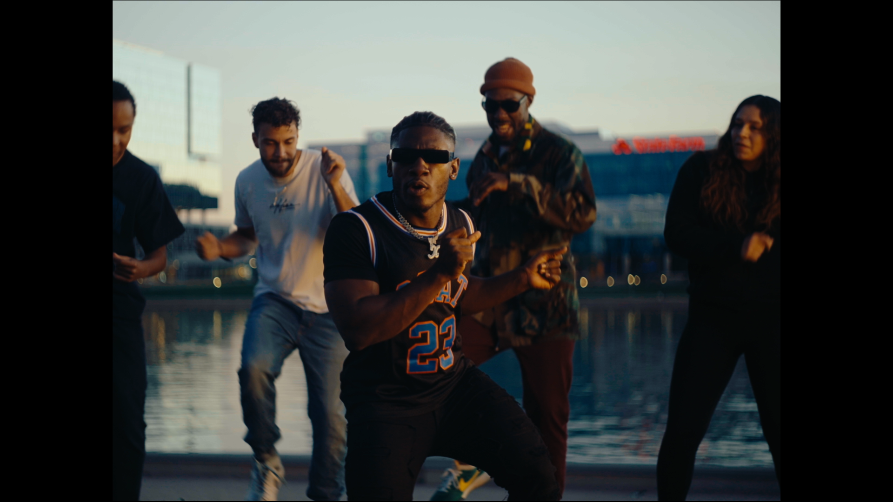
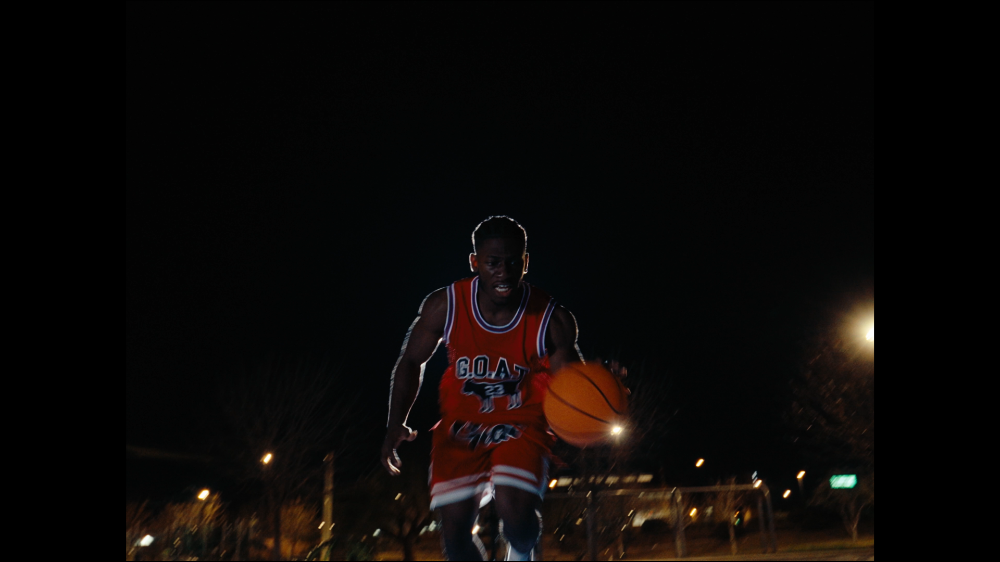
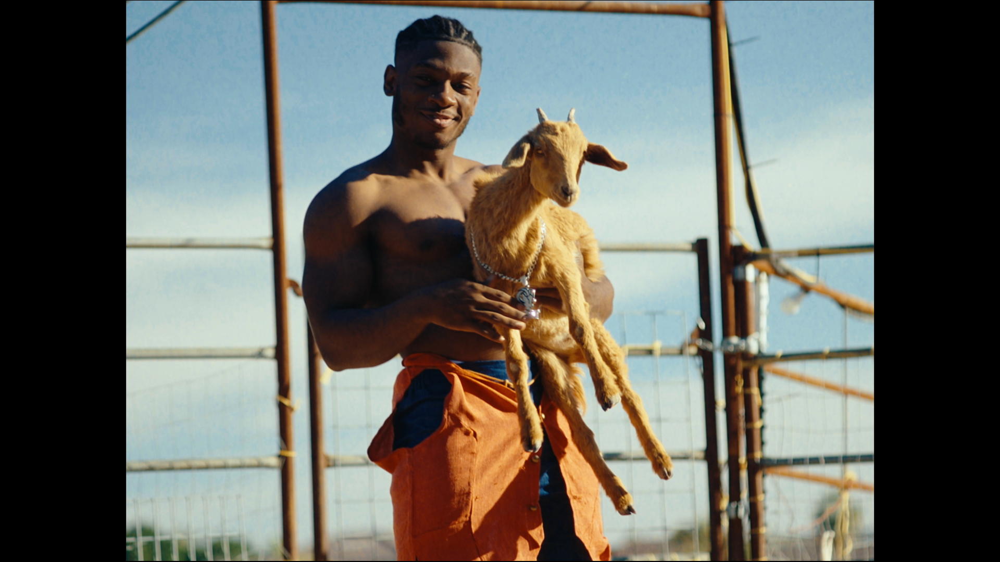

Xefferson - GOAT Alternate Reality
About
Music video for Xefferson's "GOAT Alternate Reality" featuring dynamic cinematography and creative visual effects to match the energy of the track.
Role
Director of Photography
Focus
- Performance-Driven Cinematography
- Lyric Driven Narrative
- VFX Plate Capture
- Dance Choreography Capture
Stills


